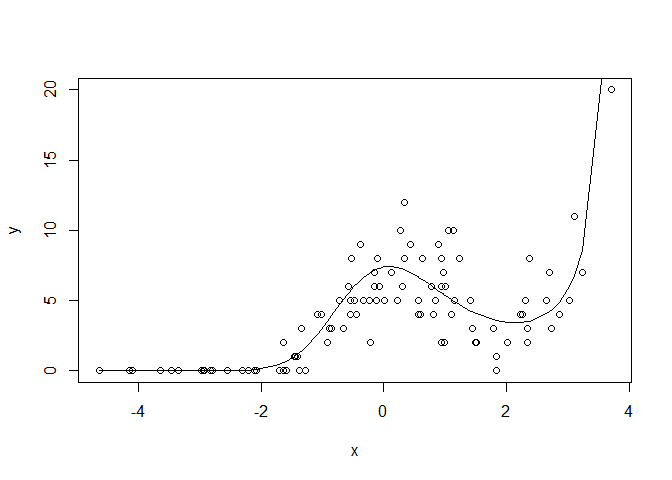

GLM tips: get non-linear with splines
This tip is great for a quick non-linear test, before you go all the way with a GAM or parametric non-linear model.
You’ll need the splines library, which comes shipped with R anyway.
First, let’s make up a bit of count data. The underlying ‘true’ model will be poisson (think count data) with a log link (so slope estimates are multiplicative of the poisson mean). But we’ll introduce a bit of non-linearity.
n <- 100
set.seed(101)
x <- sort(rnorm(n, sd = 2))
mu <- 2 + 0.1*x - 0.6*x^2 + 0.18*x^3#linear predictor
y <- rpois(n, exp(mu))
plot(x, y)
lines(x, exp(mu))
Now, we could just fit a polynomial, but for real data we wouldn’t know the mean structure was generated as a polynomial. So we might want to use something a bit more flexible, like a cubic spline.
So, here’s how to make a cubic spline. We just need to choose the degrees of freedom. A DF of of 1 will give us a linear fit, higher DFs allow more bends (‘knots’). We’ll fit a log-linear model, a model with df = 2 and a model with df= 3 Given we generated our data with a cubic polynomial, we’d expect the 3 df model will do best
library(splines)
#log linear model
m1 <- glm(y ~ x, family = "poisson")
m1pred <- predict(m1, type = "response")
#non-linear models
m2 <- glm(y ~ ns(x,2), family = "poisson")
m2pred <- predict(m2, type = "response")
m3 <- glm(y ~ ns(x,3), family = "poisson")
m3pred <- predict(m3, type = "response")
par(mfrow = c(1,3))
plot(x, y, main = "DF = 1")
lines(x, exp(mu), lwd = 2, col = "grey")
lines(x, m1pred, col = "orange", lwd = 2)
plot(x, y, main = "DF = 2")
lines(x, exp(mu), lwd = 2, col = "grey")
lines(x, m2pred, col = "purple", lwd = 2)
plot(x, y, main = "DF = 3")
lines(x, exp(mu), lwd = 2, col = "grey")
lines(x, m3pred, col = "darkblue", lwd = 2) The orange line is the naive linear fit, it basically shows no trend. The purple line (df = 2) does better, but misses the kick up at the end. The blue line looks closest to the ‘true’ mean function (grey line).
The orange line is the naive linear fit, it basically shows no trend. The purple line (df = 2) does better, but misses the kick up at the end. The blue line looks closest to the ‘true’ mean function (grey line).
The purple and blue lines are our spline fits with 1 and 2 knots respectively. Both clearly capture the non-linearity. The grey line is the ‘true’ mean structure we created above. So our splines just peaks a bit too hard, but does get the shape right.
We can convince ourselves that the 3 df splines model is better with AIC
AIC(m1)
## [1] 492.1094
AIC(m2)
## [1] 434.6807
AIC(m3)
## [1] 362.3653Yep, the 3 spline model has a much lower AIC despite using more model D.F., so is better.
Transfer your spline skills, anywhere
A nice feature of this cubic spline trick is that you can use it anywhere that takes a model matrix as input. So it will work with glm, glmer, lmer and any Bayesian GLM method you care to use. Just apply your normal model selection criteria to find the ‘best’ number of knots.
First, set the knots using x:
library(splines)
xcs <- ns(x, 3) #3 knots!
head(xcs, 3)
## 1 2 3
## [1,] 0.00000000 0.0000000 0.00000000
## [2,] -0.04388799 0.1157184 -0.07117461
## [3,] -0.04775128 0.1262731 -0.07766646
plot(x, xcs[,1], type = 'l', ylim = c(min(xcs), max(xcs)))
lines(x, xcs[,2], col = "salmon")
lines(x, xcs[,3], col = "steelblue")
This splits x into three covariates (note the new matrix xcs has three columns), which I’ve plotted above. The cubic spline algorithm puts bends in the new covariates according to the density of the data.
We can use these new covariates in our model and glm will estimate a coefficient for each one.
Because the xcs are a non-linear functions of x, fitting a model against them means we can mix the curves to get a non-linear fit. We do lose a few degrees of freedom though, because now x is three covariates, instead of just one.
We can just use xcs in our model formula as a covariate.
But I prefer just to put the ns command directly into the model formula, that way it is easy to change the knots, as we did above.
What about GAMs?
If you really want to get into non-linear trend fitting, you should use a generalized additive model (GAM), such as from package mgcv.
In fact, GAM can fit these kind of splines for you too (and more), it just uses a different method to select the number of knots.
But the splines trick is still handy. For instance, you can quickly modify an existing linear model to have a non-linear spline. Or use it in a Bayesian linear model that doesn’t have a GAM equivalent (you can also spit out model matrices from mgcv and use them in Bayesian models if you want other types of splines).
So I hope you enjoying splining.